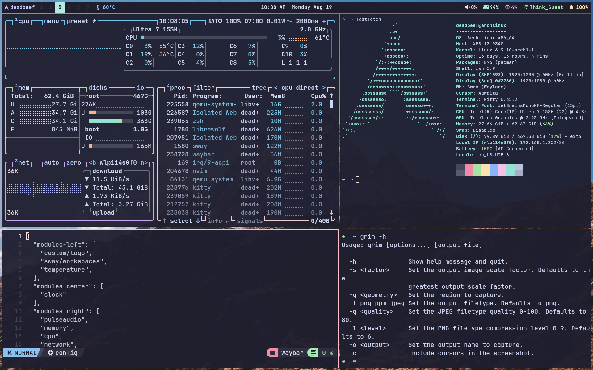
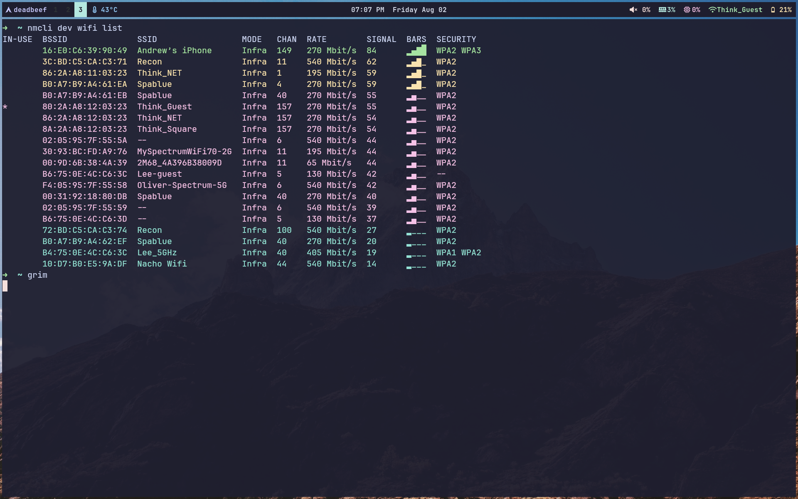

A Sample Archlinux Dotfiles for Hackers
June 20, 2024
A little bit opinion on Linux distros #
Ubuntu, Archlinux, Gentoo, NixOS, Qubes OS, Tails Personally I would kill Qubes and Tails already, rather than chosing a distro designed for a single purpose, I would rather chose a general purpose. As everything in qubes can be implemented in other general purpose systems. Qubes and Tails are not alien technologies.
Using Qubes and tails in my humble opinion not doing you any good as it shouts out that you are special, or more than special. In some way, special equals to uniq. If you are a activist or whatever political sensitive person and you are not a hacker, then you can consider using Tails such kind of distro.
NixOS and Gentoo are taking things to the extremes.
NixOS philosophy is to be reproducible. make everything easier. imagine you broke your system and you have to start from scratch build the whole system again, maybe boot into a rescue mode and save your data. install every package. Change endless configurations. NixOS saves your time and effort with one configuration file (even tho no one is doing so in a single file). And you can run package in a virtual temperury env without worrying about apps shit in your system. But in order to use this thing. You have to spend some time dive into it. learn the basics.
Gentoo is really not for small brains like you and me. if you don’t value your time. go ahead. have fun with it. it’s a lot of fun.
Ubuntu is not kicked out of the chat. although it’s been laughed about around the internet. if you want to show that you are just like everybody. disguise yourself as a simple-minded ubuntu user.
Archlinux also have a large user base, less popular than ubuntu but it has a good to read wiki. whatever issue you encounter you can look it up in the archlinux wiki. and it helps to build your knowledge base about linux if you are a fresh starter in linux.
So archlinux I would say it’s somewhere in the middle. Our dotfiles will be worked on archlinux.
DIY archlinux for example #
must have #
| categories | name |
|---|---|
| wm | sway |
| bar | waybar |
| terminal | kitty |
| shell | zsh |
| compositor | wayland |
| text editor | nvim |
| file browser | ranger |
| launcher | dmenu-wl |
| web browser | librewolf |
| screen locker | hyprlock |
This should be enough already, perhaps a little bit bloated already, why bother to use a seperate pdf viewer and a music player, as everything is available inside a browser.
Everything else is available in terminal, nmcli for wifi. bluez for bluetooth. etc.
nice to have #
| categories | name |
|---|---|
| greeter | tui-greet |
| screenshot | grim & slurp |
| screen recorder | wf-recorder |
| media player | mpv |
| system monitoring | btop |
| clipboard control | wl-clipboard |
| virtuallization | libvirt |
screenshots #
 